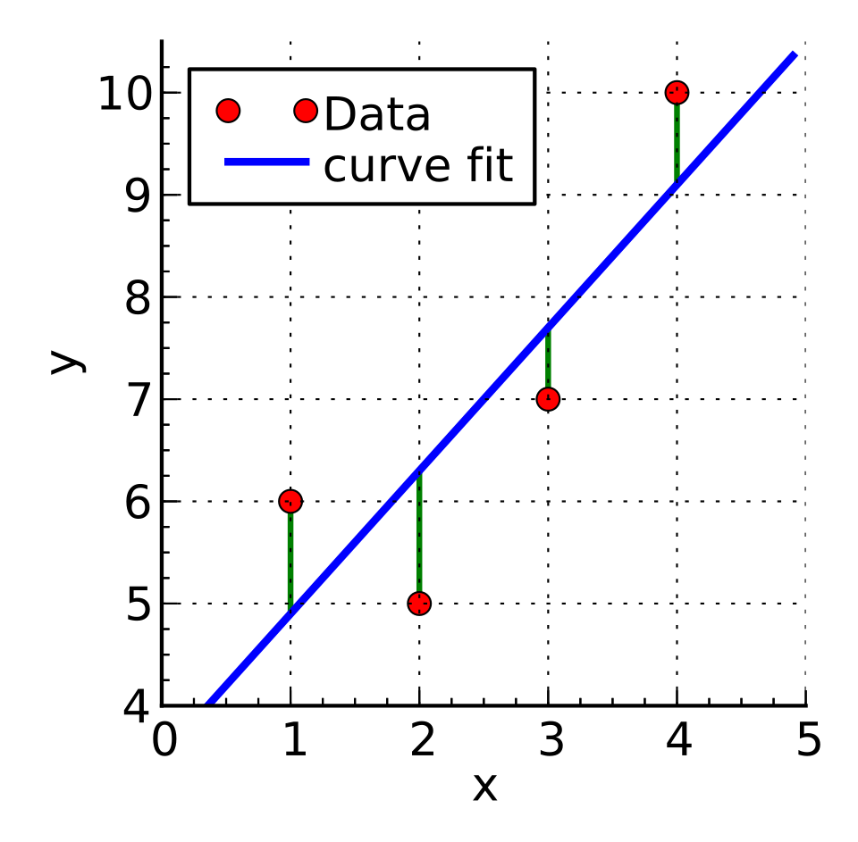
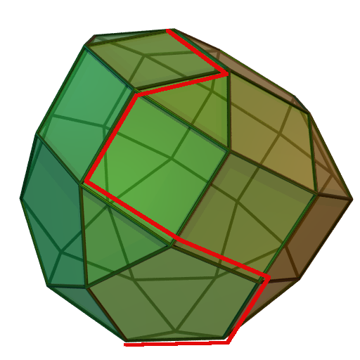

In school a linear function is a formula, y = mx + b, whose graph is a straight line. In advanced mathematics the same idea is split into two precise notions and then generalised enormously. A map is linear when it respects addition and scalar multiplication; it is affine when it is a linear map followed by a translation. The school function y = mx + b is affine, and it is linear only when b = 0. This distinction, which looks like pedantry on the real line, becomes the organising principle of linear algebra, multivariable calculus, statistics and optimisation.
The reason linear maps occupy such a central place is that they are the only maps we understand completely. A linear map between finite-dimensional spaces is determined by a finite table of numbers, its matrix; its behaviour is controlled by a handful of invariants such as rank, determinant and eigenvalues; and the equations it produces can be solved by finite algorithms. Almost every other part of analysis proceeds by reducing a nonlinear problem to a linear one. The derivative of a function is, by definition, the linear map that best approximates it near a point. A least-squares fit is an orthogonal projection, which is linear. A linear programme asks for the best vertex of a polyhedron cut out by affine inequalities. Even modern neural networks are compositions of affine maps with one very simple piecewise-linear function.
This course assumes fluency with the material of the school lesson (slope, intercepts, composition, inverses, systems of two equations) and some familiarity with matrices. It proceeds at the level of a first graduate course: every definition is stated precisely, the central theorems are proved, and the history and research connections are indicated where they illuminate the mathematics. Proofs end with the symbol ∎.
In this course, you will:
- 1.Distinguish linear from affine maps and characterise both, including the Cauchy functional equation and its pathological solutions
- 2.Work with abstract vector spaces, bases and dimension, and prove the Steinitz exchange lemma
- 3.Prove the rank–nullity theorem and use it to derive the basic structure theory of linear maps
- 4.Represent linear maps by matrices and understand change of basis and similarity invariants
- 5.Study dual spaces, dual bases, annihilators and transposes, with applications to numerical integration
- 6.Develop affine geometry: affine combinations, barycentric coordinates and the affine group
- 7.Understand the derivative as the best linear approximation, the Jacobian, and Newton's method
- 8.Derive the normal equations of least squares and interpret them as an orthogonal projection
- 9.Prove the Gauss–Markov theorem and the unbiasedness of the residual variance estimator
- 10.Solve linear programmes geometrically and by the simplex method
- 11.Prove weak duality, state strong duality and Farkas' lemma, and use complementary slackness
- 12.Study Lipschitz and piecewise-linear functions, operator norms, contractions and ReLU representations
Throughout, F denotes a field (usually ℝ), vectors in ℝⁿ are columns, Aᵀ is the transpose of A, eⱼ is the j-th standard basis vector, and ⟨x, y⟩ = xᵀy is the standard inner product.
Figures


Contents
Linear Versus Affine Maps Lesson 2
Vector Spaces, Bases and Dimension Lesson 3
Kernel, Image and the Rank–Nullity Theorem Lesson 4
Matrices, Change of Basis and Similarity Lesson 5
Dual Spaces and Linear Functionals Lesson 6
Affine Geometry Lesson 7
The Derivative as the Best Linear Approximation Lesson 8
Least Squares and Orthogonal Projection Lesson 9
The Gauss–Markov Theorem Lesson 10
Linear Programming and the Simplex Method Lesson 11
Duality, Farkas' Lemma and Complementary Slackness Lesson 12
Lipschitz and Piecewise-Linear Functions Problem Set
60 problems Assessment
Randomly generated questions
Image sources
- Figure 1 · Linear least squares example2. By Krishnavedala. CC BY-SA 3.0. From Wikimedia Commons: https://commons.wikimedia.org/wiki/File:Linear_least_squares_example2.svg
- Figure 2 · Simplex-method-3-dimensions. By Sdo. CC BY-SA 3.0. From Wikimedia Commons: https://commons.wikimedia.org/wiki/File:Simplex-method-3-dimensions.png